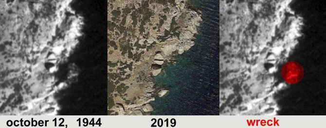

Την Παρασκευή 18 Οκτώβρη 2019, στις 19:00 στο Ιταλικό Μορφωτικό Ινστιτούτο Αθηνών θα προβληθεί το ιστορικό ντοκυμαντέρ του Γιώργου Ιατρού με τίτλο “memORIA”.
{kind=link}
Το θέμα του ντοκυμαντερ είναι το ναυάγιο του ατμόπλοιου ORIA το Φλεβάρη του 1944 στη νήσο Πάτροκλος στο Σαρωνικό. Πρόκειται για ένα από τα πλέον πολύνεκρα ναυάγια του Β’ Παγκοσμίου Πολέμου το οποίο όμως αποκρύφθηκε από τη ναζιστικές δυνάμεις κατοχής την εποχή εκείνη. Πάνω από 4.000 ιταλοί στρατιώτες μεταφέρονταν αιχμάλωτοι από τους Ναζί, καθώς λίγους μήνες νωρίτερα τον Σεπτέμβρη του 1943 η Ιταλία είχε συνθηκολογήσει με τους συμμάχους και τα ιταλικά στρατεύματα που βρίσκονταν στην Ελλάδα αιχμαλωτίστηκαν υπό γερμανική διοίκηση.
Σε φωτογραφία που τραβήχτηκε τον Οκτώβρη του '44 από αεροπλάνο της βρετανικής αεροπορίας (RAF) φαίνεται η πλώρη του Oria στον πάτροκλο. Τα επόμενα χρόνια το ναυάγιο υποχώρησε και διαλύθηκε. Στις μέρες μας από το ναυάγιο δεν μένουν παρά σκόρπια συντρίμια στην ανατολική πλευρά του Πάτροκλου σε βάθος περίπου 30 μέτρων. Παρόλα αυτά είναι ένα σημείο κατάδυσης γνωστούς σε πολλές/πολλούς δύτες λόγω εγγύτητας στην Αθήνα.

Η προβολή του memORIA εντάσσεται στο πλαίσιο εκδηλώσεων για τα 75 χρόνια από την απελευθέρωση της Αθήνας από τη ναζιστική κατοχή: